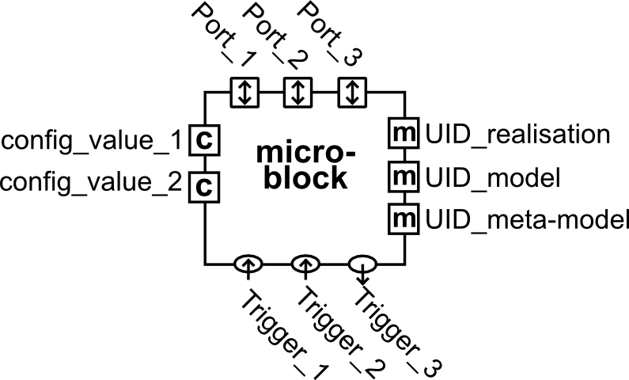
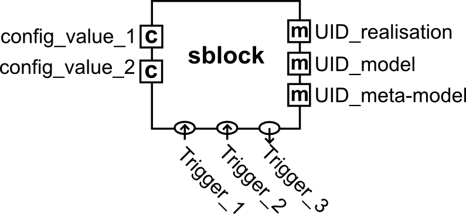

types
Table of Contents
1 Block Types
1.1 Generic block

Figure 1: A generic microblock
1.1.1 Cardinalities
0..* (data) ports
0..* trigger (ports)
- 0..1 input triggers
- 0..* output triggers
0..* configuration values
3..3 identifier ports
- 1..1 meta model UID
- 1..1 model UID
- 1..1 realisation UID
1.2 Computation block (C-Block)
A C-Block represents computational behaviour, i.e., functions, and that has all above-mentioned structural primitives.
1.2.1 Cardinalities
0..* (data) ports
1..1 trigger (ports)
- 1..1 input triggers
- 0..0 output triggers
0..* configuration values
3..3 identifier ports
1.2.2 Examples
- a low-pass filter
- a Singular Value Decomposition.
1.3 Interaction block (I-Block)

Figure 2: An i-block
An I-Block represents constraints between the data involved in cblock interactions. Access to that data takes place through the data port structural primitive, by means of read() and write() functions. In addition to data ports, an iblock also has configuration values and semantic identifiers.
1.3.1 Cardinalities
0..* (data) ports
0..0 trigger (ports)
- 0..0 input triggers
- 0..0 output triggers
0..* configuration values
3..3 identifier ports
1.3.2 Examples
- a memory buffer
- a road map.
1.4 Scheduling block (S-Block)

Figure 3: An s-block
An S-Block represents constraints on the sequencing of cblock computations. Activation of (internal and/or external) computations is available via (one or more) trigger ports, by means of trigger() functions. In addition to trigger ports, an sblock also has configuration values and semantic identifiers.
1.4.1 Cardinalities
0..0 (data) ports
1..* trigger (ports)
- 1..1 input triggers
- 0..* output triggers
0..* configuration values
3..3 identifier ports
1.4.2 Examples
- a for loop and other iterators
- rule-based function call scheduling.